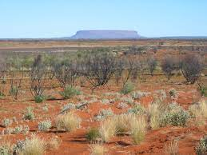

In 1932, many veterens who had been dischharged were gifted farm land from the Australian government. This was an opportunity for these veterens to find a method of livelyhood after leaving the military, and for them to survive during the Great Depression. In addition to regular livelyhood, the government promised them financial aid if and when their farms proved to be successful.
The government did not follow through on that promise, with even the most productive farms recieving no financial aid. This put the farms in a procarious position, but it was not the only issue. During this time of hardship, the seasonal migration of the indigenous emus occurred. This event meant that at least 20,000 emus were now in the same area as these farms. The emus seemed to take a liking to the farmed terrain because they did not complete the entire migration and instead stayed in the area.
The emus overran the area. They consumed huge amounts of the crops making supplies run extreemly short. They also were strong enough to create large gaps in the fences around the farmland so other creatures, especially rabbits, were able to consume the remaining crops. This issue only continued to grow as the emus settled down and became more accustomed to the area.
The farmers, who were suffering many losses from the emu invasion, took their concerns to the Australian Minister of Defence: Sir George Pearce. As a veteren himself, Pearce felt for the suffering farmers and decided to ofersee the solution himself.
Because these farmers and Pearce were all ex-military, they were very familiar with heavy artillery, including machine guns. Because of this familiarity, and their knowledge of how effective these weapons could be, they decided that they would implament them in order to handle the emu issue.The machine guns that they used were supplied to them by the Royal Australian Artillery.
The group kept track of where emus were being sited in large numbers, and focused their attacks there. They attempted to use methods of herdding, ambush, long range attacks, and car rigs. While there were mass casualties on the side of the emus, it seemed that things always fell flat. Eventually the group retreated in order to regroup.
After their short retreat, the group returned with slightly more support from the government in the form of manpower. This attempt was much more successful than the previous resulting in around 100 emus being killed per week later resulting in around 2,500 emu deaths. With this number of emus dead, the farmers were able to recover their crops and perform much more successfully. They would later attempt to get further support from the government against the emus, but this would unsuccessful.
Even though the emus suffered mass casualties, in the official historic records of this "war", the emus are titled as the victorious side. This event remains the only war in history in which mankind "lost" to animals.
Emus, or Dromaius novaehollandiae, are large, flightless birds that are native to Australia. They are also related to the Ostrich, which is the only bird larger than the emu. Emus are distinct through their brown coloring, long necks, and somewhat aggressive attitude. Even though the species suffered extreme casualties during the "war", they are not listed as a species of concern with the International Union for Conservation of Nature.
Farmers become concerned about their crop output, they try and fail to get more governmental support. Emus arrive in the area. The group gets into contact with Sir George Pearce.
The group and Pearce create their plan of action and recieve the weapons from the Royal Austrilian Artillery. The men begin journey into the area.
The first ambush is carried out upon the emus.
The first reported is filed. It lists that 2,500 rounds of ammo had been fired, approximately 100 emus had been killed, and the humans had suffered no losses. The Australian House of Representatives holds a formal discussion surrounding the issue.
Support in the form of personnel is approved by the Ministry of Defence.
The military finds their first example of actual success. This leads to the next few months of the war's continuation until it eventually fizzles out.
The Ministry of Defence is brought up into questioning around the basis of why the extensive use of ammunition was neccessary.
After a strange and cluttered process, the emu war ended fairly anti-climactically. The end was not marked by any specific date or event, and there was no significant change that caused it to end. The emu population lost an estimated 2,500, but the population itself did not really suffer and was able to make a full recovery.
At this point in time, the Great Emu War is largely looked upon as a joke and is not something that is very well known. Luckily, the government now has conservation measures in place in order to preserve native species in Australia, including emus. Even with this attack against them, the emus remain unendangered and this is not projected to change any time soon.